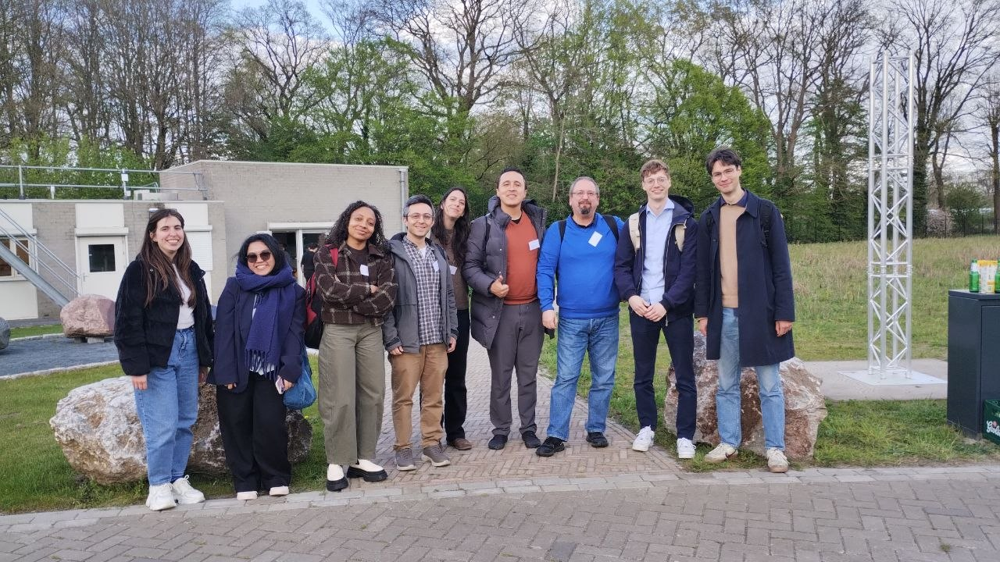
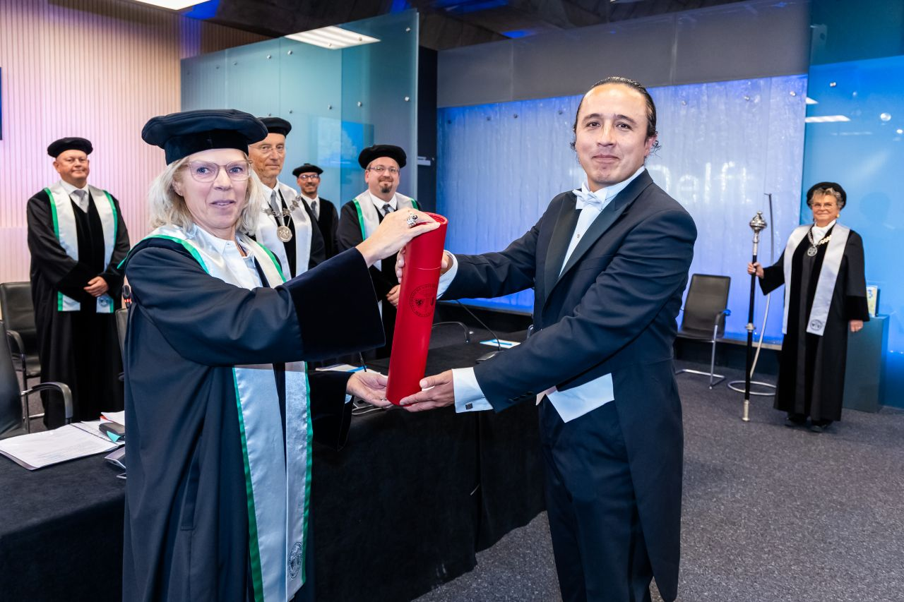

Four presentations at the 4TU / 14UAS Research Day
Members of our group contributed four presentations to the annual 4TU / 14UAS Research Day. The event took place at the University of Twente.
Contributions from our group spanned ongoing work on urban energy modelling, semantic 3D city models, and Urban Digital Twins. This reflects the interdisciplinary scope of the UrbäNRG Lab.

PhD defence, Camilo León-Sánchez
On 6 October 2025, Camilo León-Sánchez successfully defended his PhD dissertation titled "Enhancing Urban Energy Applications through Semantic 3D City Models and Open Data: The Case of the Netherlands."
The research was conducted under the supervision of promoter Jantien Stoter and copromoter Giorgio Agugiaro. The doctoral committee included Volker Coors, Jérôme Kaempf, Henk Visscher, and Laure Itard.
The full dissertation and propositions are available here.
